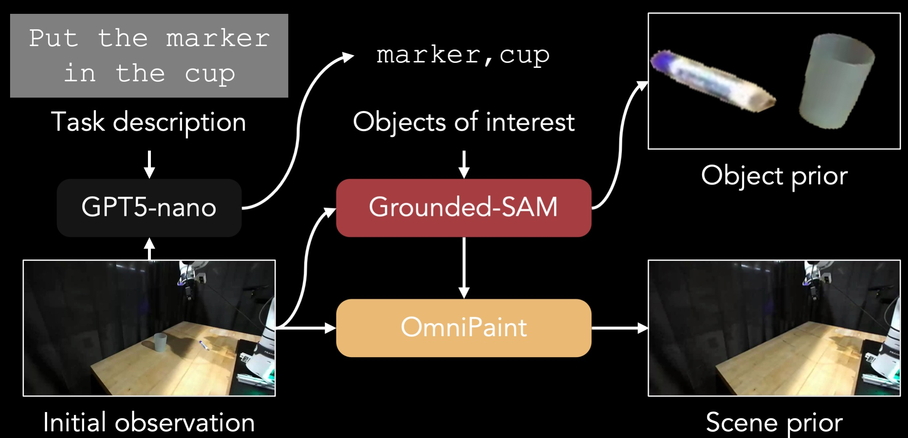

Scaling robot learning requires large-scale, diverse demonstrations, yet real-world data collection via teleoperation remains prohibitively expensive and time-consuming. While video diffusion models offer a promising avenue for data scaling, existing generative approaches are often limited to superficial visual augmentation, or suffer from embodiment hallucinations that yield physically infeasible motions. We present RoboDream, a generalizable embodiment-centric world model that achieves scalable data generation by synthesizing photorealistic demonstrations with novel objects, in novel scenes, and from novel viewpoints. Our approach anchors generation to rendered robot motion while conditioning on explicit scene and object priors, effectively decoupling trajectory execution from environment synthesis.
This formulation unlocks two powerful data scaling capabilities: (1) retrieval and rebirth, which repurposes existing trajectories into entirely new contexts without new motion data; and (2) prop-free teleoperation, where operators manipulate empty air and the model hallucinates the target objects and scene afterwards. We demonstrate with real-world experiments that our generated data consistently improves downstream policy performance and significantly reduces real-world data requirements across diverse manipulation tasks.
Interpret the same trajectory in multiple ways with different prior inputs.
Change the object prior to swap in unseen target objects while keeping the same motion.
Replace the scene prior to place the robot in entirely new environments.
Re-render robot motion from new camera angles with matching scene priors.
RoboDream conditions video generation on three decoupled inputs: (1) a rendered robot-only trajectory that anchors the embodiment; (2) a scene prior (background image) that defines the environment; and (3) an object prior (cropped object image) that specifies target objects. The rendered motion and scene prior are concatenated with noisy latent frames in channel space, while object prior tokens are injected via extended self-attention. Task instructions and global trajectory are injected via cross-attention to ensure semantic and kinematic consistency.
To train RoboDream, we construct training pairs from existing robot datasets without manual annotation. Given an initial observation and task instruction, we use GPT-5-nano to identify task-relevant objects, Grounded-SAM to segment them into an object prior, and OmniPaint to inpaint the background into a clean scene prior.

Given a new task, we retrieve semantically similar trajectories from an existing dataset (e.g., DROID). These are replayed in a simulator to render robot-only motion videos from novel camera viewpoints. Combined with new scene and object priors, RoboDream synthesizes demonstrations reborn in entirely new contexts — no new motion data needed.
Operators control the robot to perform task motions with imaginary objects (pantomime). This can happen on an empty workspace or in a simulator. The recorded trajectory is rendered, and RoboDream paints arbitrary objects and scenes. One motion to multiple tasks: a single prop-free trajectory can be reused across different tasks by simply changing the object and scene priors.
We evaluate on four real-world manipulation tasks using a Franka Panda robot (DROID platform). Gen-Mix (50 real + 100 generated demos) achieves 62.5% average success rate, significantly outperforming Real-50 (36.3%) and Orig-Mix (45.0%). Raw DROID data (Orig-100) completely fails (0%) due to domain shift, while RoboDream successfully bridges this gap.
| Task | Real-50 | Orig-100 | Orig-Mix | Gen-100 | Gen-Mix |
|---|---|---|---|---|---|
| Put Cube into Cup | 35 | 0 | 55 | 20 | 65 |
| Put Marker into Bowl | 30 | 0 | 35 | 15 | 55 |
| Remove Marker from Bowl | 20 | 0 | 20 | 5 | 35 |
| Wipe Table with Towel | 60 | 0 | 70 | 20 | 95 |
| Average | 36.3 | 0 | 45.0 | 15.0 | 62.5 |
Prop-free teleoperation achieves competitive performance (32.5%) compared to real data collection (36.3%) while being ~2.2x faster.
Performance consistently improves as more generated data is added, saturating around Mix-200.
| Task | Real-50 | Real w/ Gen | Prop-Free |
|---|---|---|---|
| Put Cube into Cup | 35 | 25 | 30 |
| Put Marker into Bowl | 30 | 20 | 20 |
| Remove Marker from Bowl | 20 | 15 | 20 |
| Wipe Table with Towel | 60 | 60 | 60 |
| Average | 36.3 | 30.0 | 32.5 |
| Real-50 | Mix-100 | Mix-200 | Mix-300 | Mix-400 |
|---|---|---|---|---|
| 35 | 65 | 75 | 80 | 75 |
| 30 | 55 | 70 | 70 | 70 |
| 20 | 35 | 45 | 50 | 50 |
| 60 | 95 | 100 | 95 | 100 |
| 36.3 | 62.5 | 72.5 | 73.75 | 73.75 |
Policies trained with RoboDream-generated data (Gen-Mix) on four manipulation tasks.
Put Cube into Cup
Put Marker into Bowl
Remove Marker from Bowl
Wipe Table with Towel
@article{ye2026robodream,
title={RoboDream: Compositional World Models for Scalable Robot Data Synthesis},
author={Ye, Junjie and Xue, Rong and Van Hoorick, Basile and Li, Runhao and Rajaprakash, Harshitha and Tokmakov, Pavel and Irshad, Muhammad Zubair and Guizilini, Vitor and Wang, Yue},
journal={arXiv preprint arXiv:2606.02577},
year={2026}
}